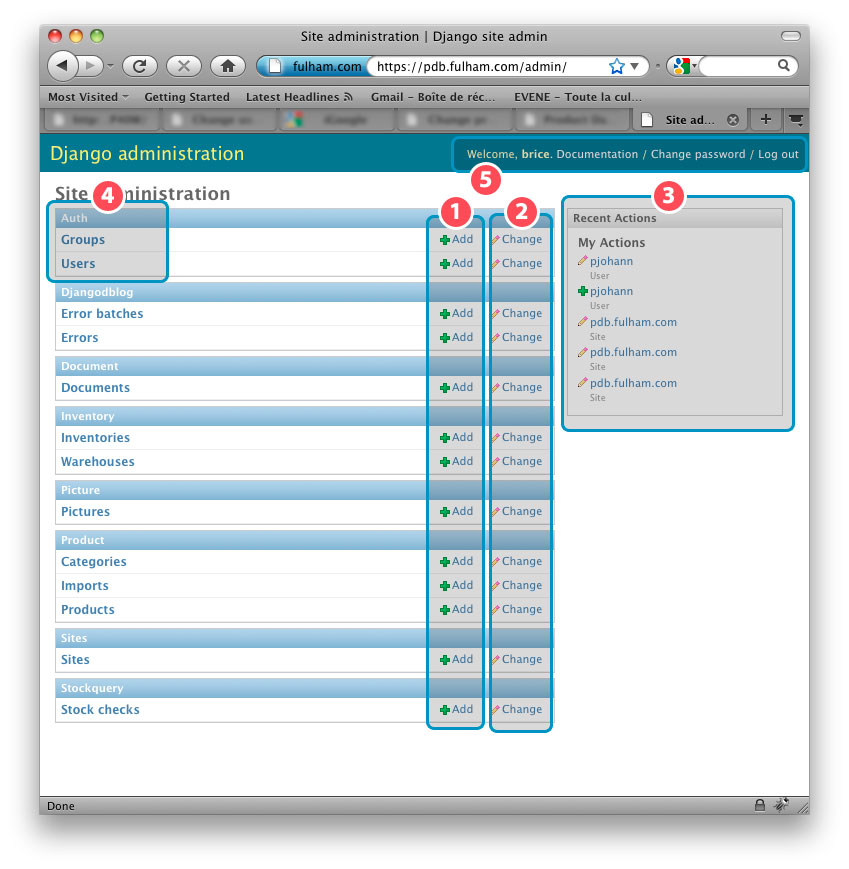
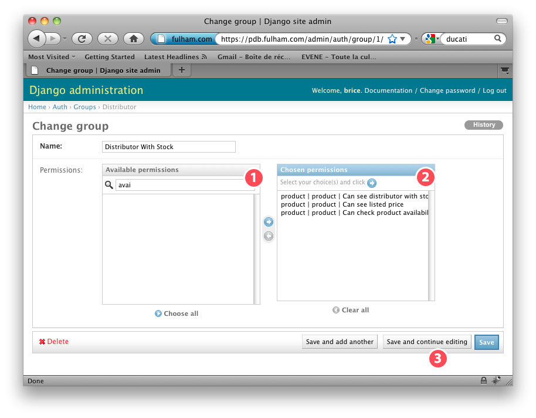
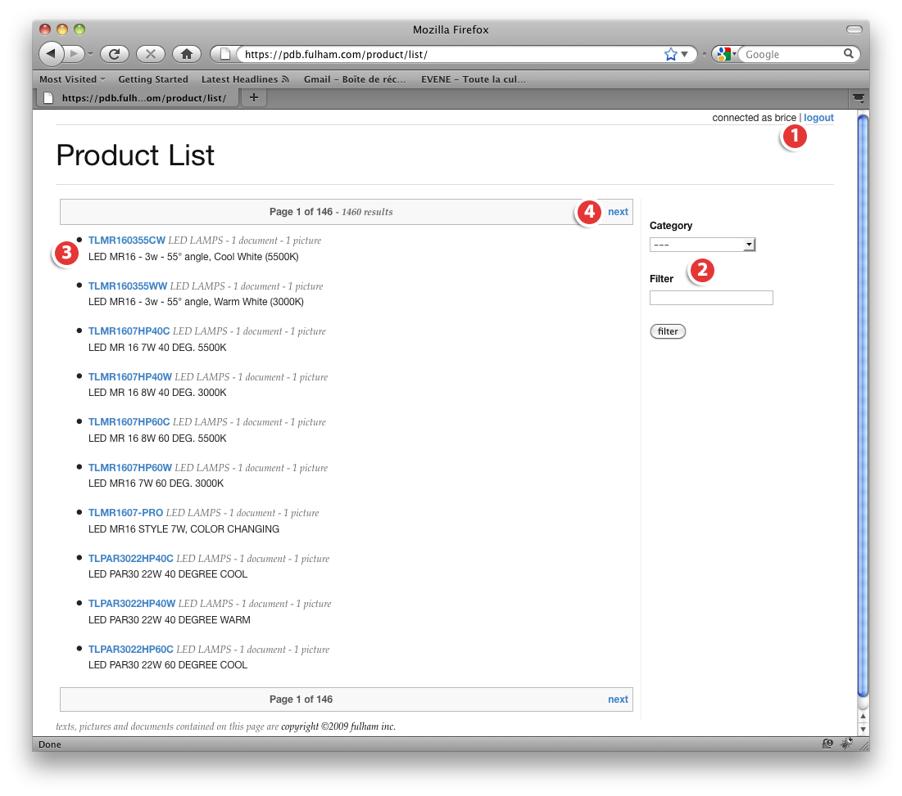
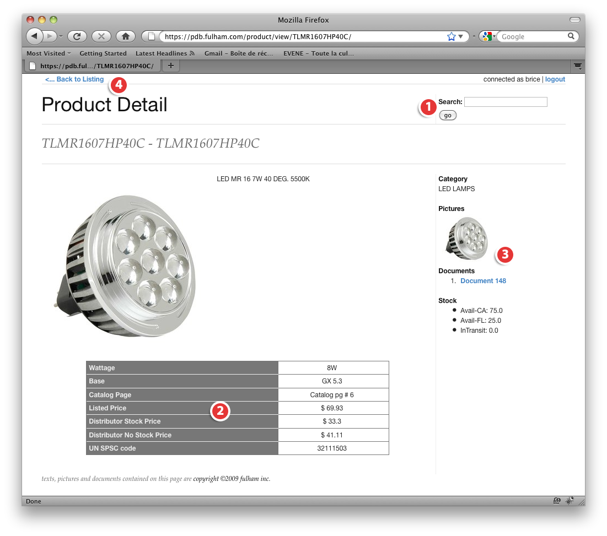

{kind=link}

This section will explain how to setup the server and its dependancies on a Ubuntu platform. Ubuntu must be setup and running on the server. For instance, I'm using the version 8.04 on the production server:
brice@pdb:~$ lsb_release -a No LSB modules are available. Distributor ID: Ubuntu Description: Ubuntu 8.04.2 Release: 8.04 Codename: hardyYou can download this version at ubuntu download page. Feel free to use an upgraded version, it shouldn't be an issue since Django sources are used. My user(brice) has sudo right access. First, make sure that your repository informations and your ubuntu are up to date:
brice@pdb:~$ sudo apt-get update [sudo] password for brice: Get:1 http://security.ubuntu.com hardy-security Release.gpg [189B] Hit http://archive.ubuntu.com hardy Release.gpg ... Get:16 http://archive.ubuntu.com hardy-updates/universe Sources [45.5kB] Fetched 1329kB in 10s (129kB/s) Reading package lists... Done brice@pdb:~$ sudo apt-get dist-upgrade Reading package lists... Done Building dependency tree ... brice@pdb:~$
You should now be ready for the next step.
We will only need the SSH, HTTP and HTTPS open on our server. So lets close all the other port
on the server. Edit a file named /etc/iptables.up.rules to put those iptables rules:
brice@pdb:~$ sudo -i root@pdb:~# vi /etc/iptables.up.rules root@pdb:~# iptables-restore < /etc/iptables.up.rules root@pdb:~# iptables -L Chain INPUT (policy ACCEPT) target prot opt source destination ACCEPT all -- anywhere anywhere REJECT all -- anywhere 127.0.0.0/8 reject-with icmp-port-unreachable ACCEPT all -- anywhere anywhere state RELATED,ESTABLISHED ACCEPT tcp -- anywhere anywhere tcp dpt:www ACCEPT tcp -- anywhere anywhere tcp dpt:https ACCEPT tcp -- anywhere anywhere state NEW tcp dpt:ssh ACCEPT icmp -- anywhere anywhere icmp echo-request LOG all -- anywhere anywhere limit: avg 5/min burst 5 LOG level debug prefix `iptables denied: ' REJECT all -- anywhere anywhere reject-with icmp-port-unreachable Chain FORWARD (policy ACCEPT) target prot opt source destination REJECT all -- anywhere anywhere reject-with icmp-port-unreachable Chain OUTPUT (policy ACCEPT) target prot opt source destination ACCEPT all -- anywhere anywhere root@pdb:~#
Here is the iptables configuration:
# Generated by iptables-save v1.3.8 on Mon Oct 19 16:04:41 2009 *filter :INPUT ACCEPT [0:0] :FORWARD ACCEPT [0:0] :OUTPUT ACCEPT [0:0] -A INPUT -i lo -j ACCEPT -A INPUT -d 127.0.0.0/255.0.0.0 -i ! lo -j REJECT --reject-with icmp-port-unreachable -A INPUT -m state --state RELATED,ESTABLISHED -j ACCEPT -A INPUT -p tcp -m tcp --dport 80 -j ACCEPT -A INPUT -p tcp -m tcp --dport 443 -j ACCEPT -A INPUT -p tcp -m state --state NEW -m tcp --dport 22 -j ACCEPT -A INPUT -p icmp -m icmp --icmp-type 8 -j ACCEPT -A INPUT -m limit --limit 5/min -j LOG --log-prefix "iptables denied: " --log-level 7 -A INPUT -j REJECT --reject-with icmp-port-unreachable -A FORWARD -j REJECT --reject-with icmp-port-unreachable -A OUTPUT -j ACCEPT COMMIT # Completed on Mon Oct 19 16:04:41 2009
Now we need to setup this connection to start right before the network interface are loaded.
To do so, you need to edit the /etc/network/interfaces and add the pre-up line just
after iface lo inet loopback:
# Used by ifup(8) and ifdown(8). See the interfaces(5) manpage or
# /usr/share/doc/ifupdown/examples for more information.
# The loopback network interface
auto lo
iface lo inet loopback
pre-up iptables-restore < /etc/iptables.up.rules
# The primary network interface
# Uncomment this and configure after the system has booted for the first time
auto eth0
iface eth0 inet static
address 174.143.153.5
netmask 255.255.255.0
gateway 174.143.153.1
dns-nameservers 72.3.128.240 72.3.128.241
...
Nginx will be used as a proxy and static file server, it will also manage the SSL certificate. since Django is not a web server, it's better to use a third part application to manage the communication. So lets install NGinX:
brice@pdb:~$ sudo apt-get install nginx Reading package lists... Done Building dependency tree Reading state information... Done The following NEW packages will be installed: nginx 0 upgraded, 1 newly installed, 0 to remove and 0 not upgraded. ... Unpacking nginx (from .../nginx_0.5.33-1ubuntu0.1_amd64.deb) ... Setting up nginx (0.5.33-1ubuntu0.1) ... brice@pdb:~$We will now need to generate the CSR certificate to be able to sign ou SSL certificate. We will use openssl:
brice@pdb:~$ sudo apt-get install openssl [sudo] password for brice: Reading package lists... Done Building dependency tree ... Setting up openssl (0.9.8g-4ubuntu3.8) ... brice@pdb:~$ openssl req -new -newkey rsa:2048 -nodes -out pdb_fulham_com.csr \ > -keyout pdb_fulham_com.key -subj \ > "/C=US/ST=California/L=Hawthorne/O=Fulham Co. Inc./CN=pdb.fulham.com" Generating a 2048 bit RSA private key ........................................................................................................................................+++ ....................+++ writing new private key to 'pdb_fulham_com.key' ----- brice@pdb:~$Once generated, I generated the SSL cerficate through godaddy and validated it by checking it@fulham.com (official fulham.com mail). The next step was the generation of the web certificate and placing it at the right place on the server config directory
brice@pdb:~$ sudo su [sudo] password for brice: root@pdb:/home/brice# sudo cat pdb.fulham.com.crt gd_bundle.crt > /etc/nginx/pdb.fulham.com.crt root@pdb:/home/brice# cp pdb_fulham_com.key /etc/nginx/
Now we will setup nginx site to enable the ssl.
root@pdb:/home/brice# rm /etc/nginx/sites-enabled/default root@pdb:/home/brice# vi /etc/nginx/sites-available/pdb.fulham.com
and here is the configuration for pdb.fulham.com:
server {
# redirect every HTTP request to HTTPS
listen 80;
server_name pdb.fulham.com;
location / {
rewrite ^ https://pdb.fulham.com$request_uri? permanent;
}
}
server {
listen 443;
ssl on;
ssl_certificate /etc/nginx/pdb.fulham.com.crt;
ssl_certificate_key /etc/nginx/pdb_fulham_com.key;
server_name pdb.fulham.com;
access_log /var/log/nginx/pdb.fulham.com.access.log;
error_log /var/log/nginx/pdb.fulham.com.error.log;
#add_header Front-End-Https on;
proxy_set_header X-Url-Scheme $scheme;
location / {
proxy_pass http://127.0.0.1:9000/;
proxy_set_header X-Forwarded-Protocol "https";
proxy_set_header Host $host;
proxy_set_header X-Real-IP $remote_addr;
client_max_body_size 3000m;
}
location /media/ {
alias /home/brice/productdatabase/media/;
}
location /static/ {
alias /home/brice/productdatabase/static/;
}
location /adminmedia/ {
alias /usr/lib/python2.5/site-packages/django/contrib/admin/media/;
}
error_page 500 502 503 504 /50x.html;
location = /50x.html {
root /var/www/nginx-default;
}
}
Then we have to:
root@pdb:/home/brice# ln -s /etc/nginx/sites-available/pdb.fulham.com /etc/nginx/sites-enabled/pdb.fulham.com root@pdb:/home/brice# ls -l /etc/nginx/sites-enabled/ total 0 lrwxrwxrwx 1 root root 41 Oct 15 21:10 pdb.fulham.com -> /etc/nginx/sites-available/pdb.fulham.com root@pdb:/home/brice# mkdir /var/log/nginx root@pdb:/home/brice# /etc/init.d/nginx stop Stopping nginx: nginx. root@pdb:/home/brice# /etc/init.d/nginx start Starting nginx: nginx.
That's all for nginx, it should be now up and running on port 443 (https).
MySQL V5 is used to store the data. A couple of other dependencies should come with it, so don't be surprised. The installation process will also ask you for a password. The password doesn't have to be too complicated because the dbd will only be accessible on localhost and an additionnal firewall will be setup to protect it.
root@pdb:/home/brice# sudo apt-get install mysql-server Reading package lists... Done Building dependency tree ... root@pdb:/home/brice# mysql -u root -p mysql> create database pdb; Query OK, 1 row affected (0.00 sec) mysql> grant usage on *.* to pdb_user@localhost identified by 'your_password_here'; Query OK, 0 rows affected (0.00 sec) mysql> grant all privileges on pdb.* to pdb_user@localhost; Query OK, 0 rows affected (0.00 sec)
The database should now be accessible localy by the user pdb_user and the password you set. If you want you can check the db creation status with this command in the mysql console:
mysql> show databases; +--------------------+ | Database | +--------------------+ | information_schema | | mysql | | pdb | +--------------------+ 3 rows in set (0.00 sec)
Now we will create a database and a user for this database.
We will install django framework using the official repository. to do it we need subversion to be installed. We will first leave the root mode for more security.
root@pdb:/home/brice# exit exit brice@pdb:~$ sudo apt-get install subversion [sudo] password for brice: Reading package lists... Done Building dependency tree ... brice@pdb:~$ svn co http://code.djangoproject.com/svn/django/trunk/ django-trunk A django/LICENSE A django/django ... U django Checked out revision 11627. brice@pdb:~$
Now that we have the repository downloaded in our Django, we have to install it. We will also need the python to mysql library, so Django can use MySQL.
brice@pdb:~$ sudo ln -s `pwd`/django-trunk/django /usr/lib/python2.5/site-packages/ brice@pdb:~$ sudo ln -s `pwd`/django-trunk/django/bin/django-admin.py /usr/local/bin brice@pdb:~$ sudo apt-get install python-mysqldb Reading package lists... Done Building dependency tree Reading state information... Done ... brice@pdb:~$
The product database application is using differents application to work correctly. Those are django pluggable ones.
This API is used to provide access to the database through the protocol REST.
brice@pdb:~$ svn checkout http://django-rest-interface.googlecode.com/svn/trunk/ django-rest-interface A django-rest-interface/__init__.py A django-rest-interface/django_restapi A django-rest-interface/django_restapi/__init__.py ... brice@pdb:~$ sudo ln -s `pwd`/django-rest-interface/django_restapi /usr/lib/python2.5/site-packages/
Django rest interface is not including the user in the request. This patch is adding this functionality.
Index: authentication.py
===================================================================
--- authentication.py (revision 81)
+++ authentication.py (working copy)
@@ -62,6 +62,12 @@
return False
auth = auth.strip().decode('base64')
username, password = auth.split(':', 1)
+
+ from django.contrib.auth import authenticate
+ user = authenticate(username=username, password=password)
+ if user is not None and user.is_active:
+ request.user = user
+
return self.authfunc(username=username, password=password)
def digest_password(realm, username, password):
Without this patch, 80% of the rest product unit test will fail. To apply the patch, save this in file named authentication.py in /django-rest-interface/django_restapi folder and run the following command:
brice@pdb:~/django-rest-interface/django_restapi$ patch authentication.py authentication.py.patch
Django extension provide all kind of small tool in addition to the django manager built in functionnalities. We will also install graphviz to be able to use the generated db schema.
brice@pdb:~$ sudo apt-get install graphviz python-pygraphviz Reading package lists... Done Building dependency tree ... brice@pdb:~$ hg clone http://hgsvn.trbs.net/django-command-extensions brice@pdb:~$ cd django-command-extensions/ brice@pdb:~/django-command-extensions$ sudo python setup.py install [sudo] password for brice: running install ... running install_egg_info Writing /usr/lib/python2.5/site-packages/django_extensions-0.4.egg-info brice@pdb:~/django-command-extensions$
To generate a picture of the actual db schema use the following command
brice@pdb:~$ cd productdatabase brice@pdb:~/productdatabase$ ./manage.py graph_models -a -g -o ../documentation/db_schema.png brice@pdb:~$
The picture should be available here : http://pdb.fulham.com/doc/db_schema.png
This library simplify error management in the website by storing all the differents exception raised by the software
brice@pdb:~$ sudo apt-get install git-core Reading package lists... Done Building dependency tree Reading state information... Done ... brice@pdb:~$ git clone git://github.com/dcramer/django-db-log.git Initialized empty Git repository in /home/brice/django-db-log/.git/ remote: Counting objects: 60, done. remote: Compressing objects: 100% (42/42), done. remote: Total 60 (delta 18), reused 47 (delta 14) Receiving objects: 100% (60/60), 7.90 KiB, done. Resolving deltas: 100% (18/18), done. brice@pdb:~$ sudo ln -s `pwd`/django-db-log/djangodblog/ /usr/lib/python2.5/site-packages/
brice@pdb:~$ sudo apt-get install mercurial Reading package lists... Done Building dependency tree Reading state information... Done ... brice@pdb:~$ hg clone https://sorl-thumbnail.googlecode.com/hg/ sorl requesting all changes adding changesets adding manifests adding file changes added 362 changesets with 640 changes to 86 files (+5 heads) 30 files updated, 0 files merged, 0 files removed, 0 files unresolved brice@pdb:~$ sudo ln -s `pwd`/sorl/sorl/ /usr/lib/python2.5/site-packages/
I use postfix as mail server. postfix has to be installed as an website internet server,
the address I use is pdb.fulham.com
brice@pdb:~/productdatabase$ sudo apt-get install postfix [sudo] password for brice: Reading package lists... Done ... brice@pdb:~/productdatabase$
Spawning will multithread django which make it looks even more cool !
brice@pdb:~/productdatabase$ sudo apt-get install python-setuptools build-essential libssl-dev [sudo] password for brice: Reading package lists... Done Building dependency tree Reading state information... Done ... brice@pdb:~/productdatabase$ sudo easy_install -U setuptools brice@pdb:~/productdatabase$ sudo easy_install spawning Searching for spawning ... Finished processing dependencies for spawning brice@pdb:~/productdatabase$
In order to maintain the process as easy as possible, supervisor will be mastering django launches !
brice@pdb:~/productdatabase$ sudo easy_install supervisor Searching for supervisor ... Finished processing dependencies for supervisor brice@pdb:~/productdatabase$ sudo mkdir /var/log/supervisord/ brice@pdb:~/productdatabase$Then you can create supervisord.conf and put this configuration inside. Remember to change the directory of pdb (here /home/brice/productdatabase) by yours:
[unix_http_server]
file=/tmp/supervisor.sock ; (the path to the socket file)
[supervisord]
logfile=/var/log/supervisord/supervisord.log ; (main log file;default $CWD/supervisord.log)
logfile_maxbytes=50MB ; (max main logfile bytes b4 rotation;default 50MB)
logfile_backups=10 ; (num of main logfile rotation backups;default 10)
loglevel=debug ; (log level;default info; others: debug,warn,trace)
pidfile=/var/run/supervisord.pid ; (supervisord pidfile;default supervisord.pid)
nodaemon=false ; (start in foreground if true;default false)
minfds=1024 ; (min. avail startup file descriptors;default 1024)
minprocs=200 ; (min. avail process descriptors;default 200)
user=root ; (default is current user, required if root)
childlogdir=/var/log/supervisord/ ; ('AUTO' child log dir, default $TEMP)
[rpcinterface:supervisor]
supervisor.rpcinterface_factory = supervisor.rpcinterface:make_main_rpcinterface
[supervisorctl]
serverurl=unix:///tmp/supervisor.sock ; use a unix:// URL for a unix socket
[program:pdb]
directory=/home/brice/productdatabase
command=/usr/bin/spawn --factory=spawning.django_factory.config_factory settings --port=9000
process_name=%(program_name)s ; process_name expr (default %(program_name)s)
autostart=true ; start at supervisord start (default: true)
autorestart=true ; retstart at unexpected quit (default: true)
user=brice
stdout_logfile=/var/log/pdb_dev.log ; stdout log path, NONE for none; default AUTO
stdout_logfile_maxbytes=1MB ; max # logfile bytes b4 rotation (default 50MB)
stdout_logfile_backups=10 ; # of stdout logfile backups (default 10)
stdout_capture_maxbytes=1MB ; number of bytes in 'capturemode' (default 0)
stderr_logfile=/var/log/pdb_dev_error.log ; stderr log path, NONE for none; default AUTO
stderr_logfile_maxbytes=1MB ; max # logfile bytes b4 rotation (default 50MB)
stderr_logfile_backups=10 ; # of stderr logfile backups (default 10)
stderr_capture_maxbytes=1MB ; number of bytes in 'capturemode' (default 0)
Make sur that /usr/local/bin/spawn is the right path (the command whereis spawn will show it)
to your installation of spawning. To run spawning we will use an init script.
Create /etc/init.d/supervisord
#!/bin/bash -e
supervisord=/usr/local/bin/supervisord
supervisorctl=/usr/local/bin/supervisorctl
name="supervisor"
[ -f $supervisord ] || exit 1
[ -f $supervisorctl ] || exit 1
RETVAL=0
start() {
echo -n "Starting $name: "
$supervisord
RETVAL=$?
[ $RETVAL -eq 0 ] && touch /var/lock/subsys/$name
echo
return $RETVAL
}
stop() {
echo -n "Stopping $name: "
$supervisorctl shutdown
RETVAL=$?
[ $RETVAL -eq 0 ] && rm -f /var/lock/subsys/$name
echo
return $RETVAL
}
case "$1" in
start)
start
;;
stop)
stop
;;
restart)
stop
start
;;
esac
exit $REVAL
Again, make sure that supervisord and supervisorctl are the right places ! Then we can add this script by adding it to the correct init script, so the server will turn on by itself if the server is restarted
brice@pdb:~$ sudo chmod +x /etc/init.d/supervisord brice@pdb:~$ sudo update-rc.d supervisord start 89 S . brice@pdb:~$ sudo /etc/init.d/supervisord start
It's now time to install our main software. For now, there is no central repository for the product database server, so the process will be a more complicated - thanks to Peter - and will not explain how to do it here because it doesn't make sense to copy a repository instead of cloning it! Next step is the setup file settings_local.py in our productdatabase project folder. Create this file and put this inside:
# Django settings for productdatabase project.
DEBUG = True
ADMINS = (
('Brice Leroy', 'bleroy@fulham.com'),
)
DATABASE_ENGINE = 'mysql' # 'postgresql_psycopg2', 'postgresql', 'mysql', 'sqlite3' or 'oracle'.
DATABASE_NAME = 'pdb' # Or path to database file if using sqlite3.
DATABASE_USER = 'pdb_user' # Not used with sqlite3.
DATABASE_PASSWORD = 'mysal_password' # Not used with sqlite3.
DATABASE_HOST = '' # Set to empty string for localhost. Not used with sqlite3.
DATABASE_PORT = '' # Set to empty string for default. Not used with sqlite3.
# Local time zone for this installation. Choices can be found here:
# http://en.wikipedia.org/wiki/List_of_tz_zones_by_name
# although not all choices may be available on all operating systems.
# If running in a Windows environment this must be set to the same as your
# system time zone.
TIME_ZONE = 'America/Chicago'
# Language code for this installation. All choices can be found here:
# http://www.i18nguy.com/unicode/language-identifiers.html
LANGUAGE_CODE = 'en-us'
SITE_ID = 1
# If you set this to False, Django will make some optimizations so as not
# to load the internationalization machinery.
USE_I18N = True
# Make this unique, and don't share it with anybody.
SECRET_KEY = '2fvk@#oSD%(;Has235S9B3C#&AMV83%DKktucA60/.]1!@~113'
You will have to replace the SECRET_KEY by another random value of your choice and set the
variable DATABASE_PASSWORD with the password you set for the user pdb_user. We can now
synchronize the database:
brice@pdb:~/productdatabase$ mkdir media brice@pdb:~/productdatabase$ mkdir media/product_document brice@pdb:~/productdatabase$ mkdir media/product_picture brice@pdb:~/productdatabase$ sudo apt-get install python-imaging Reading package lists... Done Building dependency tree ... ldconfig deferred processing now taking place brice@pdb:~/productdatabase$ ./manage.py syncdb Creating table auth_permission Creating table auth_group Creating table auth_user Creating table auth_message Creating table django_content_type Creating table django_session Creating table django_site Creating table django_admin_log Creating table picture_picture Creating table product_category Creating table product_product Creating table product_import Creating table document_document Creating table inventory_warehouse Creating table inventory_inventory Creating table djangodblog_errorbatch Creating table djangodblog_error Creating table stockquery_stockcheck You just installed Django's auth system, which means you don't have any superusers defined. Would you like to create one now? (yes/no): yes Username (Leave blank to use 'brice'): E-mail address: bleroy@fulham.com Password: Password (again): Superuser created successfully. Installing index for auth.Permission model Installing index for auth.Message model Installing index for admin.LogEntry model Installing index for product.Product model Installing index for inventory.Inventory model Installing index for djangodblog.ErrorBatch model Installing index for djangodblog.Error model Installing index for stockquery.StockCheck model brice@pdb:~/productdatabase$
The Product database server has been developed with tests to ensure consistency. Each time you make a modification it must run them to avoid functionnality breaking. To run all of them:
brice@pdb:~/productdatabase$ ./manage.py test Creating test database... Creating table auth_permission Creating table auth_group ...
You should see a . for every successful test. Remember that without the authentification patch you will get a couple of F meaning a failure.
Since the source are GIT managed you can just clone it. To backup the whole site, you need to save the media directory, the database and the settings_local.py
brice@pdb:~$ mysqldump --add-drop-table -c -u pdb_user pdb -p > django.sql Enter password: brice@pdb:~$ tar czf django_backup.tgz productdatabase/media productdatabase/settings_local.py django.sql
Those command will provide you a full backup of your actual installation. You have now to transfert the file django_backup.tgz on a safe place.
Django comes with a ready to use administration. Only users with staff property checked will have an access to the admin page. To access the admin page go to https://pdb.fulham.com/admin.
It's recommanded to manage your user rights through group and them adhere them to this group

To start, in the group module section, click on add link. As an exemple, we will create the distributor group that can see products regular prices, distributor stock price and can see product availability:

The principals rights are:
When you have setup the groups, you can now create user using the add user button in the user module
This example show you a rest user with full access to the rest interface. It is not using the group so I can show which right are selected. It's always recommended to use group to manage right.
An import consist in a CSV file. Common spreadsheet allow you to import a table to a CSV. The first column should contain the item number, the other column are the quantity in stock. The import will read the first line and generate warehouse if they don't exist. Here is an exemple
The product list view show you paginated version of the products. It display up to 10 items per pages.


REST API needs you to authentify using HTTP1.0 (rfc1945). I choosed this protocol because it is protected by the SSL layer. The authentification has to be include the header of the request. Following is an exemple of authentification using python:
from binascii import b2a_base64
import urllib2
req = urllib2.Request('https://pdb.fulham.com/product/xml/TLMR160355CW/')
req.add_header('AUTHORIZATION','Basic %s' % b2a_base64('username:password')[:-1])
response = urllib2.urlopen(req)
print response.read()
If you copy and past the commands above in a python console, you should obtain this result:
brice@ubuntuserver64:~/django-db-log$ python
Python 2.6.2 (release26-maint, Apr 19 2009, 01:58:18)
[GCC 4.3.3] on linux2
Type "help", "copyright", "credits" or "license" for more information.
>>> from binascii import b2a_base64
>>> import urllib2
>>> req = urllib2.Request('https://pdb.fulham.com/product/xml/TLMR1607HP40C/')
>>> req.add_header('AUTHORIZATION','Basic %s' % b2a_base64('username:password')[:-1])
>>> response = urllib2.urlopen(req)
>>> print response.read()
The last line is supposed to give you this result (depending how many things you did import):
<?xml version="1.0" encoding="utf-8"?>
<objects>
<object pk="3" model="product.product">
<property name="item_number">TLMR1607HP40C</property>
<property name="title">TLMR1607HP40C</property>
<property name="description">LED MR 16 7W 40 DEG. 5500K </property>
<property name="length" uom="in">None</property>
<property name="width" uom="in">None</property>
<property name="height" uom="in">None</property>
<property name="activity_code">A</property>
<property name="un_spsc_code">32111503</property>
<property name="dist_velocity_code">C</property>
<property name="wattage">8W</property>
<property name="base">GX 5.3</property>
<property name="page">Catalog pg # 6</property>
<property name="upc"></property>
<object pk="81" model="picture.picture">
<property name="title"></property>
<property name="url">http://pdb.fulham.com/media/product_picture/tmpb_s6TL.jpg</property>
</object>
<object pk="148" model="document.document">
<property name="title"></property>
<property name="url">http://pdb.fulham.com/media/product_document/tmpCBF5oZ.pdf</property>
</object>
<object pk="13487" model="inventory.inventory">
<property name="warehouse">Avail-CA</property>
<property name="quantity">75.0</property>
<property name="date">2009-10-19 14:52:22</property>
</object>
<object pk="13488" model="inventory.inventory">
<property name="warehouse">Avail-FL</property>
<property name="quantity">25.0</property>
<property name="date">2009-10-19 14:52:22</property>
</object>
<object pk="13489" model="inventory.inventory">
<property name="warehouse">InTransit</property>
<property name="quantity">0.0</property>
<property name="date">2009-10-19 14:52:22</property>
</object>
</object>
</objects>
Here is the couple of exemple of urls that can be used on the rest API.
To read data, the method should be GET.
https://pdb.fulham.com/product/xml/TLMR1607HP40C/: return the full information regarding a producthttps://pdb.fulham.com/product/xml/TLMR1607HP40C/20/: Check if 20 items are availablehttps://pdb.fulham.com/product/xml/: Return the full listingTo delete a record, the method should be DELETE, then calling https://pdb.fulham.com/product/xml/TLMR1607HP40C/
will delete the product with the item_number TLMR1607HP40C
to update a record, the method should be PUT, then calling https://pdb.fulham.com/product/xml/TLMR1607HP40C/
will update the tiem TLMR1607HP40C. Each property you send will update the record designated by the url.
Same as updating record but will create a new one. The url is https://pdb.fulham.com/product/xml/ and you
have to provide all the informations